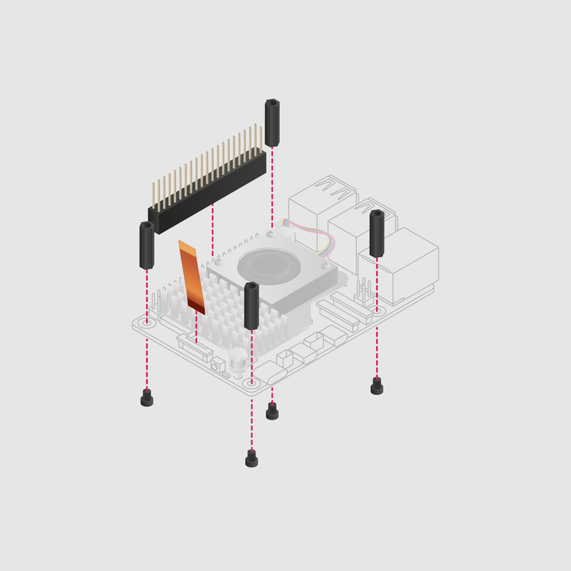

AI HAT hardware checklist
Both AI HAT+ and AI HAT+ 2 come with the following mounting hardware:
- Four threaded spacers.
- Four long screws for attaching the spacers to your 5.
- Four short screws for mounting an AI HAT+ or AI HAT+ 2 to the spacers on your 5.
- A GPIO stacking header.
- A ribbon cable.

Figure 1. Mounting hardware for an AI HAT
Additionally, you need:
- A 5.
- A cross-head screwdriver.
- Optionally, a Active Cooler (recommended). This is an aluminium heatsink with a fan that helps to dissipate heat from your 5, keeping it at a safe operating temperature.
AI HAT+ 2 comes with an additional heatsink that you install on top of the HAT. We recommend installing both the Active Cooler (on your 5) and the heatsink (on your AI HAT+ 2).
When you have all of the required hardware, complete the following steps.
Related topic: AI HAT models compared